응용지질기사 (2009-03-01 기출문제)
1과목: 암석학 및 광물학
1. 편광현미경은 광물의 광학적 특성을 관찰하는데 이용된다. 광축에 수직인 방향으로 제작된 박편을 놓고 수렴된 단색광을 통과시켜 직교니콜 하에서 관찰하면 그림과 같이 보이는데 이런 현상을 무엇이라 하는가?
- 간섭상
- 다색성
- 복굴절
- 소광현상
(정답률: 67%)

2. 대장상(enantiomorphy)에 관한 설명으로 옳은 것은?
- 대장상 관계에 있는 두 결정형을 정형과 부형이라고 한다.
- 반영조작으로 대칭이 되지 않고 회전시키면 대칭관계임을 알 수 있다.
- 결정축을 잡는 방향에 따라 모양이 비슷하지만 서로 다른형이 나타나는 것이다.
- 대장상은 대칭면이나 대칭심이 없이 대칭축만 있는 결정에서 나타난다.
(정답률: 77%)
3. 다음 중 두 광물이 유질동상의 관계를 가진 것은?
- 방해석 - 마그네사이트
- 정장석 - 미사장석
- 규선석 - 홍주석
- 황철석 - 백철석
(정답률: 39%)
4. 다음 중 천이가 일어날 때 다량의 에너지를 필요로 하며 비가역적이고 반응이 느리게 일어나는 천이형은?
- 변이형 천이
- 재결합형 천이
- 질서-무질서형 천이
- 비교란형 천이
(정답률: 42%)
5. 공간격자에는 모두 14가지 유형이 있는데, 이를 14 브라바이스 격자라 한다. 다음 중 등축정계에는 존재하지 않는 격자는 무엇인가?
- 단일격자(P)
- 면심격자(F)
- 체심격자(I)
- 저심격자(A, B 또는 C)
(정답률: 62%)
6. 결정이 성장할 때는 여러 요인이 작용한다. 결정의 성장속도를 좌우하는 요인에 포함되지 않는 것은?
- 용액의 pH농도
- 용액의 포화상태
- 물질의 공급상태
- 불순물의 존재 유무
(정답률: 50%)
7. 다음 중 안정된 이온결정이 갖추어야 할 다섯 가지 조건을 제시하는 것은?
- 폴링의 규칙
- 오일러의 법칙
- 보웬의 법칙
- 골드슈미트의 광물학적 성질
(정답률: 72%)
8. 다음 중 광물의 색과 조흔색의 연결로 틀린 것은?
- 자연금 : 황색 - 연황색
- 황철석 : 연황색 - 황색
- 황동석 : 진한 황색 - 녹흑색
- 자철석 : 흑색 - 적갈색
(정답률: 72%)
9. 원자번호 57에서 71에 속하는 원소로서 지화학적 성질이 서로 비슷한 원소들을 무엇이라고 하는가?
- 비금속원소
- 반금속원소
- 알칼리금속원소
- 희토류원소
(정답률: 79%)
10. 다음 중 유리광택을 보이는 광물은?
- 금홍석
- 섬아연석
- 녹주석
- 활석
(정답률: 28%)
11. 섬장암과 섬록암사이의 중간적인 조성을 가진 심성암으로서 거의 같은 양의 정장석과 사장석을 포함하며 회백색의 조립 등립질인 암석은?
- 화강섬록암
- 현무암
- 조면암
- 몬조니암
(정답률: 89%)
12. 장석질 사암 중에서 장석의 함유량이 점토를 제외한 골격 입자의 약 25% 이상으로 나타나는 암석은?
- 그레이와케
- 석영 사암
- 암편 사암
- 아르코스
(정답률: 87%)
13. 다음 중 실리카(SiO2) 함량이 95%에 달하는 화학적 퇴적암은?
- 석회암
- 고회암
- 쳐어트
- 경석고
(정답률: 58%)
14. 화성암의 모드 분석(mode analysis)이란 무엇인가?
- 구성광물의 종류와 함량을 부피 백분율로 분석하는 것
- 화성암을 화학성분으로 분석하는 것
- 화성암을 육안관찰로 분석하는 것
- 화성암을 편광현미경으로 관찰ㆍ분석하는 것
(정답률: 75%)
15. 다음 중 엽리구조가 관찰되지 않는 암석은?
- 점판암
- 규암
- 녹색편암
- 편마암
(정답률: 79%)
16. 다음 중 화성암의 성질이 염기성암에서 산성암으로 감에 따른 변화로 맞는 것은?
- SiO2의 양이 감소한다.
- 유색광물은 흑운모, 각섬석, 휘석, 감람석의 순서로 형성된다.
- 정장석의 양이 증가한다.
- 암석의 색깔이 밝은 색에서 어두운 색으로 변한다.
(정답률: 44%)
17. 규장질 심성암을 국제지질과학연합(IUGS) 분류 안으로 분류할 때 분류기준광물에 속하지 않은 것은?
- 석영
- 휘석
- 준장석
- 사장석
(정답률: 86%)
18. 비교적 얕은 곳에서 잔물결이나 유동하는 물의 작용이 퇴적물 표면에 미쳐서 나타나는 파상(波狀)의 자국이 지층 중에 그대로 보존되어 있는 구조는?
- 연흔(ripple mark)
- 사층리(cross-bedding)
- 건열(mud-crack)
- 결핵체(concretion)
(정답률: 94%)
19. 셰일이 광역변성작용을 받아 변성정도가 높아지면서 슬레이트, 천매암, 편암, 편마암으로 이화될 때, 동시에 출현하는 지시광물의 순서로 맞는 것은?
- 녹니석 → 흑운모 → 석류석 → 십자석 → 남정석 → 규선석
- 녹니석 → 규선석 → 흑운모 → 십자석 → 석류석 → 남정석
- 석류석 → 녹니석 → 십자석 → 규선석 → 흑운모 → 남정석
- 석류석 → 십자석 → 규선석 → 녹니석 → 남정석 → 흑운모
(정답률: 67%)
20. 변성상은 변성작용의 온도와 압력의 범위를 규정한다. 가장 높은 압력을 가리키는 변성상은?
- 그래뉼라이트상
- 에클로자이트상
- 혼펠스상
- 녹색편암상
(정답률: 74%)
2과목: 구조지질학
21. 다음 중 그 성인이 나머지와 다른 지형적 특성은?
- 빙퇴구(Drumlin)
- 에스카(Esker)
- 트래버틴(Travertine)
- 소구(Kame)
(정답률: 43%)
22. 다음 중 리아스식 해안의 형성원인은 무엇인가?
- 침강 운동으로 인하여 형성된다.
- 융기운동으로 인하여 형성된다.
- 화산작용에 의하여 형성된다.
- 습곡작용에 의하여 형성된다.
(정답률: 100%)
23. 수평 습곡축을 가지는 두 습곡에 의해 돔과 분지형태(dome and basin pattern)의 중첩습곡구조가 발생할 수 있는 경우는?
- 중첩된 두 습곡의 습곡축이 평행하고, 두 습곡축면이 모두 수직이다.
- 중첩된 두 습곡의 습곡축이 직각을 이루며 습곡축면이 모두 수직이다.
- 중첩된 두 습곡의 습곡축이 평행하고, 선행습곡 축면은 수평 또한 습곡축면은 수직이다.
- 중첩된 두 습곡의 습곡축이 직각을 이루며 선행 습곡 축면은 수평 또한 습곡축면은 수직이다.
(정답률: 67%)
24. 대륙지각의 강도(strength)는 다음 중 어느 부분에서 가장 높은가?
- 취성영역의 최상부
- 연성영역의 최하부
- 취성-연성 전이대
- 취성영역의 중간부
(정답률: 71%)
25. 다음 표는 4개 층의 두께와 각 층의 전단 변형(shear strain)을 보여준다. 전체 A, B, C, D 층에 대한 평균 전단변형은 얼마인가?
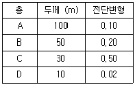
- 35.28
- 15.12
- 7.55
- 0.19
(정답률: 58%)
26. 다음 중 정수압(hydrostatic pressure) 상태를 나타내는 모어 다이아그램(Mohr diagram, 2차원)은? (가로축 : 수직응력, 세로축 : 전단응력)
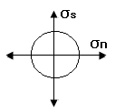
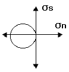
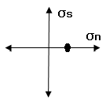
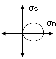
(정답률: 50%)
27. 다음에 나열된 동위원소들 중 가장 젊은 지질연대를 측정할 수 있는 것은?
- 87Rb → 87Sr
- 238U → 206Pb
- 235U → 207Pb
- 14C → 14N
(정답률: 92%)
28. 다음 중 카르스트 지형과 가장 관련이 없는 도시는?
- 단양
- 영월
- 춘천
- 제천
(정답률: 86%)
29. 우리나라의 지질계통명 중에서 중생대 백악기에 속하지 않는 것은?
- 유천층군
- 신동층군
- 연일층군
- 하양층군
(정답률: 74%)
30. 단층선애(fault line scraps)의 설명으로 맞는 것은?
- 단층활동에 의해 노출된 절벽
- 상ㆍ하반 암석의 차별침식에 의해 형성된 절벽
- 단층면에 의해 형성된 삼각형 모양의 절벽
- 절리면에 의해 형성된 절벽
(정답률: 53%)
31. 다음의 암석 내에 발달할 수 있는 면구조가 잘못 연결된 것은 어느 것인가?
- 편암 - 편리
- 편마암 - 사층리
- 슬레이트 - 점판 벽개
- 사암 - 분급층리
(정답률: 100%)
32. 주향과 경사가 N35°E/50°NW 인 단층면에 나타날 수 없는 단층조선의 선주향 경사방향(plunge)은?
- 북서방향
- 북동방향
- 남동방향
- 남서방향
(정답률: 69%)
33. 다음 중 연성 전단대에서 관찰하기 어려운 지질 구조는?
- 단층 각력
- 칼집 습곡
- 암쇄암
- S-C 밴드 구조
(정답률: 84%)
34. 상부가 대륙지각으로 이루어진 두 판의 충돌에 의해 형성된 산맥이 아닌 것은?
- 안데스 산맥
- 알프스 산맥
- 우랄 산맥
- 히말라야 산맥
(정답률: 74%)
35. 지각하부와 맨틀상부로 이루어진 지각구조로 지진파의 속도가 감소하는 지역은?
- 모호로비치치 불연속면
- 암석권
- 대류권
- 연약권
(정답률: 50%)
36. 곡류하는 하천에서 최심하상선(thalweg)을 따라 활발하게 발생하는 측방 침식에 의해 형성된 사면은 무엇인가?
- 활주사면(slip-off slope)
- 자유사면(free face)
- 상승적 사면(waxing slope)
- 공격사면(undercut slope)
(정답률: 69%)
37. 지구대의 형성과 가장 관련이 깊은 지질 구조는 무엇인가?
- 습곡구조
- 정단층
- 수직단층
- 부정합
(정답률: 67%)
38. 리히터 규모 4인 지진은 리히터 규모 2의 지진보다 얼마나 에너지가 큰가?
- 약 2배
- 약 40배
- 약 300배
- 약 900배
(정답률: 71%)
39. 판의 수렴형 경계(convergent margin)에서는 일반적으로 어떤 변형이 우세하게 작용하는가?
- 압축변형(comperssion)
- 인장변형(extension)
- 전단변형(shearing)
- 연성변형(ductile deformation)
(정답률: 94%)
40. 다음 중 하곡의 발달에 영향을 미치는 요소가 아닌 것은?
- 사면 경사의 점도
- 강수량을 좌우하는 기후
- 침식에 대한 저항성을 규정하는 지질구조
- 퇴적물의 공급방향
(정답률: 73%)
3과목: 탐사공학
41. 쌍극자배열을 이용한 전기비저항 탐사에서 전류 10[A]를 흘려 5[V}의 전위차가 측정되었다. 전류전극 사이와 전위전극 사이의 간격은 각각 3m이고, 전류전극과 전위전극 사이의 거리는 9m 일 때 겉보기 비저항[Ωm]은?
- 35.4
- 92.1
- 141.3
- 282.7
(정답률: 44%)
42. 주파수영역 유도분극 (I.P) 탐사에서 일반적으로 사용되는 주파수의 범위는?
- 0.1 ~ 10Hz
- 10 ~ 30Hz
- 30 ~ 100Hz
- 100Hz 이상
(정답률: 44%)
43. 물리검층으로 구한 유정의 검층자료로부터 저류가능 지층을 판별하기 위해 필요한 정보가 아닌 것은?
- 공극률
- 유체포화율
- 투자율
- 투수율
(정답률: 48%)
44. 굴절법 탄성파탐사를 적용하는데 있어 기본전제조건이 아닌 것은?
- 각 지층의 두께는 입사되는 탄성파 에너지의 파장보다 작아야 한다.
- 탄성파 전파속도는 심도가 깊어짐에 따라 증가해야 한다.
- 파의 경로는 측선이 포함된 수직면에 국한되어 파의 측면전파 현상이 전혀 없다고 가정한다.
- 하부 층의 두께는 상부 층의 두께와 같거나 그 이상이 되어야 한다.
(정답률: 50%)
45. 다음 중 자연잔류자화의 종류에 대한 설명으로 틀린 것은?
- 등온 잔류자화는 일정한 온도 하에서 짧은 시간동안만 존재하고 사라지는 외부자기장에 의해 발생한다.
- 열 잔류자화는 큐리온도 이상의 높은 온도에서 외부 자기장에 의해 발생한다.
- 퇴적 잔류자화는 세립질 물질이 퇴적되면서 발생한다.
- 점성 잔류자화는 암석이 약한 외부자기장을 오랫동안 받아서 발생한다.
(정답률: 44%)
46. 다음 중 현장에서 자연수 시료의 채취방법으로 옳지 않은 것은?
- 하천수 시료를 채취할 때에는 반드시 흐르는 물의 중앙에서 시료병이 물속에 잠기도록 넣어서 채취한다.
- 시료채취 지점의 물로 시료병을 여러 번 세척한 후 뚜껑 부분까지 채워서 채취한다.
- 펌프가 설치된 관정에서는 펌프를 작동시킨 후 바로 시료를 채취해야 한다.
- 수온, 전기전도도, pH 등은 현장에서 직접 측정하는 것이 좋다.
(정답률: 83%)
47. 다음 중 일반적인 지자기장의 일 변화량은 어느 정도인가?
- 0.1~0.3γ
- 1.0~3.0γ
- 10~30γ
- 100~300γ
(정답률: 65%)
48. Goldschmidt는 원소의 종류를 지구화학적으로 친철원소, 친동원소, 친석원소, 친기원소 등 4가지로 분류하였다. 다음 중 친석원소가 아닌 것은?
- 리튬(Li)
- 불소(F)
- 질소(N)
- 텅스텐(W)
(정답률: 62%)
49. 다음 중 황화광물의 탐사에 가장 적합한 탐사법은?
- 중력탐사법
- 자력탐사법
- 자연전위법
- 비저항법
(정답률: 59%)
50. 다음 중 암석의 밀도에 대한 설명으로 틀린 것은?
- 산성 화성암은 염기성 화성암보다 밀도가 크다.
- 변성암은 변성정도가 증가할수록 밀도가 증가한다.
- 일반적으로 퇴적암은 화성암이나 변성암보다 밀도가 작다.
- 퇴적암의 밀도는 조성, 교결, 연령, 공극률뿐만 아니라 공극유체의 종류와도 관계가 있다.
(정답률: 77%)
51. 굴절법 탄성파탐사에서 실제로 존재하는 층이 탐지되지 않을 때 그 숨은 층(hidden layer)이라고 한다. 다음 중 숨은층이 발생하는 원인으로 틀린 것은?
- 층의 두께가 입사파의 한 파장보다 클 경우
- 하부층의 속도가 상부층의 속도보다 더 낮은 경우
- 상부층과 하부층의 속도차이가 매우 작을 경우
- 수진기의 간격이 너무 클 경우
(정답률: 50%)
52. 중력이상으로부터 잔여중력이상을 구하는 방법이 아닌 것은?
- 평균법
- 표준곡선 이용법
- 2차 미분법
- 다항식 적립법
(정답률: 22%)
53. 탄성파 탐사의 디지털 자료에 있어 측정시간 간격(sampling time)이 4ms 이면 나이퀴스트(Nyquist) 주파수는?
- 500Hz
- 250Hz
- 125Hz
- 100Hz
(정답률: 44%)
54. 다음 중 수층이나 천부 지층에서 다중반사파와 관련된 울림현상을 크게 감쇠시키는 반사법 탄성파탐사의 자료처리 과정은?
- 백색화(whitening)
- 디멀티플렉싱(demultiplexing)
- 디리버버레이션(dereverberation)
- 디고스팅(deghosting)
(정답률: 24%)
55. 다음 중 중력탐사시 보정하여야 할 사항이 아닌 것은?
- 고도
- 경도
- 조석
- 지형
(정답률: 50%)
56. 다음과 같은 특징을 갖는 자성체는 무엇인가?
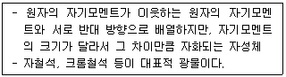
- 상자성체
- 반자성체
- 강자성체
- 페리자성체
(정답률: 72%)
57. 지자기장의 요소들 간에 관계식으로 틀린 것은? (단, D=편각, I=복각, H=지자기장의 수평성분, Z=지자기장의 수직성분, T=총자기이다.)
- T = (H2 + Z2)1/2
- Z = Tsin D
- H = Tcos I
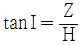
(정답률: 60%)
58. 상대유전율이 16인 토양 아래에 상대유전율이 9인 석회암층이 있다. 지하투과 레이다탐사에서 전자기파가 수직입사를 하였다면 반사계수는 얼마인가?
- -0.14
- 0.14
- -0.28
- 0.28
(정답률: 19%)
59. 다음과 같은 탄성파의 주시곡선에 대한 설명으로 맞는 것은?
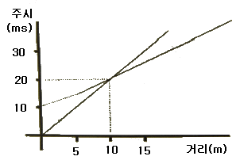
- 상부층의 속도는 200m/sec 이다.
- 하부층의 속도는 상부층의 속도의 4배이다.
- 10m 지점까지는 굴절파가 도달하지 않는다.
- 10m 지점부터 굴절파가 직접파보다 더 빠르다.
(정답률: 39%)
60. 다음 탄성파에 대한 설명 중 틀린 것은?
- 스톤리파는 고체와 액체의 경계면에서 발생한다.
- 표면파에는 러브파, 레일리파, 스톤리파 등이 있다.
- 종파는 파의 진행방향과 입자의 운동방향이 평행하다.
- 러브파가 존재하기 위해서는 상부 표층의 S파 속도가 하부층의 S파 속도보다 커야 한다.
(정답률: 45%)
4과목: 지질공학
61. 사면안정공법 중 안전율증가법(억지공)이 아닌 것은?
- 앵커공법
- 압성토공법
- 옹벽공법
- 배수공법
(정답률: 58%)
62. 불투수성 지반위의 자유면 대수층에 우물을 파고 우물의중심으로부터 5m, 30m 되는 곳에 관측정을 설치하고, 우물에서 1,140m3/일을 양수하기 시작한 후 6시간 후에 정상상태에 도달하여 그림과 같은 수위 관측치를 얻었다. 대수층의 투수계수는 얼마인가?
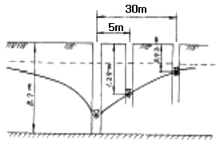
- 37.82m/일
- 51.66m/일
- 118.84m/일
- 278.64m/일
(정답률: 24%)
63. RMR(Rock Mass Rating) 분류법을 근거로 하여 SMR(Slope Mass Rating) 값을 획득할 때 고려되는 요소가 아닌 것은?
- 사면과 불연속면 사이의 주향의 상관성
- 사면의 굴착방법
- 사면의 경사와 불연속면의 경사의 상관성
- 사면 구조물의 중요도
(정답률: 65%)
64. 균질대수층에서 측정한 수위자료를 이용하여 유선망을 작도할 때 유의 사항(유선망의 특성)으로 틀린 것은?
- 유선과 등수두선은 서로 평행하다.
- 유선망을 이루는 사각형은 이론상 정사각형이다.
- 인접한 2개의 등수두선 사이의 손실 수두는 서로 같다.
- 인접한 2개의 유선 사이를 흐르는 침투수량은 서로 같다.
(정답률: 74%)
65. 지표 근처에 연약 점토층에 부분적으로 분포되어 있는 경우 적용할 수 있는 지반개량공법으로 가장 적당한 것은?
- 바이브로플로테이션공법
- 지하수위저하공법
- 굴착치환공법
- 동압밀공법
(정답률: 54%)
66. 암반사면 위의 불연속면들의 분포가 다음의 평사투영과 같을 때 사면에서 어떤 형태의 파괴가 예상되는가?
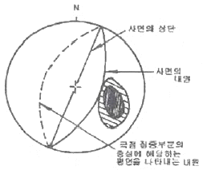
- 평면파괴
- 원호파괴
- 쐐기파괴
- 전도파괴
(정답률: 34%)
67. 다음 그림과 같이 지표에서 200ton의 집중하중이 작용할 때 재하점에서 깊이 4m, 수평으로 2m 지점에 발생하는 연직응력(σz)은 얼마인가?
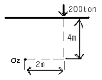
- 1.65 ton/m2
- 3.43 ton/m2
- 12.55 ton/m2
- 25.25 ton/m2
(정답률: 24%)
68. 다음 중 화학적 풍화의 종류에 해당되지 않는 것은?
- 가수분해작용
- 용탈작용
- 산화작용
- 동결융해작용
(정답률: 79%)
69. 단위 수두 변화에 따라 단위 표면적당 투수성 층이 흡수하거나 배출하는 물의 체적을 의미하는 것은?
- 유동계수
- 체적계수
- 비유출율
- 저류계수
(정답률: 48%)
70. 흙의 액성한계와 소성한계 사이의 차이를 나타내는 것은?
- 액성지수
- 소성지수
- 수축지수
- 유동지수
(정답률: 77%)
71. 함몰형 지반 침하의 특징이 아닌 것은?
- 비교적 얕은 심도에서 발생한다.
- 넓은 지역에 걸쳐 서서히 발생한다.
- 급경사 층에서 발생하는 경향이 있다.
- 침하량이 크고 침하 형상이 불연속적이다.
(정답률: 67%)
72. 테르자기(Terzaghi)의 압밀이론 가정에 대한 설명으로 틀린 것은?
- 공극비와 압력과의 관계는 직선적이다.
- 토층의 압축은 삼축으로 일어난다.
- 흙은 균질하고 흙속의 공극은 물로 완전 포화되어 있다.
- 흙의 성질은 압력의 크기에 관계없이 일정하다.
(정답률: 알수없음)
73. 어떤 토양의 시료를 채취하여 분석할 때 시료의 공극비를 바르게 표시한 것은? (단, V : 시료의 체적, Vv : 공극의 체적, Vs : 입자만의 체적)
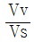
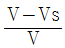
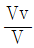
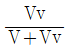
(정답률: 62%)
74. 로드 선단의 저항체를 땅 속에 넣어 관입, 회전, 인발 등의 저항으로 지반의 강도 및 밀도 등을 확인하는 방법의 원위치 시험은?
- 오거보링(auger boring)
- 샘플링(sampling)
- 회전식보링(rotary boring)
- 사운딩(sounding)
(정답률: 54%)
75. 암반 불연속면의 거칠기(roughness)조사에 대한 내용으로 틀린 것은?
- 거칠기는 일반적으로 10m 길이의 불연속면에 대한 거친 정도를 나타내는 것이다.
- 단면 측정기(Profile gauge)로 측정할 수 있다.
- 거칠기의 증가는 전단강도의 증가를 유발한다.
- JRC(Joint Roughness Coefficient)가 클수록 굴곡이 심하다는 것을 나타낸다.
(정답률: 58%)
76. 풍화와 관련된 설명 중 틀린 것은?
- 화학적 풍화에 의한 표토층의 깊이는 건습환경보다 온도에 영향을 크게 받는다.
- 고온다습한 환경에서 화학적 풍화가 빠르게 진행된다.
- 평지보다는 지형의 기복이 큰 지역에서 물리적 풍화의 속도가 빠르다.
- 고온건조한 사막지역에서도 일교차에 의한 풍화가 진행된다.
(정답률: 56%)
77. 토질사면의 전단응력을 증대시키는 요인으로 틀린 것은?
- 굴착에 의한 흙의 일부 제거
- 고결제의 결합력 둔화
- 지진, 발파에 의한 진동
- 균열내 작용하는 수압
(정답률: 22%)
78. 다음 중 자유면 대수층의 특성에 해당되지 않는 것은?
- 지하수면에서의 압력이 대기압과 동일한 상태 하에 있는 대수층이다.
- 기반암과 같은 불투수층이 대수층의 하부경계가 된다.
- 자유면 지하수의 수평범위가 국부적으로만 분포되어 있을 때 이를 부유대수층이라 하며 자유면 대수층의 특수한 경우이다.
- 지하수면은 강수의 지하함양으로 인해 지하수의 배출로 인한 변동이 없고 항상 일정하다.
(정답률: 64%)
79. 등하중 재해방식을 이용한 공내재하시험을 실시하였다. 재하압력 증분이 50kg/cm2 일 때 반경방향 변위 증분은 0.02cm로 나타났다. 공의 직경은 100mm 암반의 포아송비는 0.2인 경우 변형계수가 얼마인가?
- 10,000 kg/cm2
- 15,000 kg/cm2
- 20,000 kg/cm2
- 25,000 kg/cm2
(정답률: 40%)
80. Barton에 의해 제안된 절리면의 전단강도식에 포함되어 있지 않은 항목은 어느 것인가?
- 절리면 거칠기 계수
- 절리면의 압축강도
- 절리면 점착력
- 절리면의 기본마찰각
(정답률: 54%)
5과목: 광상학
81. 광상의 형성과 밀접한 관련성이 있는 암석내의 이차공극(secondary opening)은 유용광물의 농집에 필요한 공간을 제공하는 측면에서 매우 중요한데 이의 형성 메카니즘에 해당되지 않는 것은?
- 습곡작용(Folding)
- 화산암의 함락(Depression)
- 수축작용(Shrinkage)
- 퇴적작용(Sedimentation)
(정답률: 29%)
82. 열수광상의 모암 변질이 아닌 것은?
- 녹니석화작용(Chloritization)
- 견운모화작용(Sericitization)
- 명반석화작용(Alunitization)
- 전기석화작용(Tourmalinization)
(정답률: 69%)
83. 동(Cu)의 주요 광석광물 중 황화광물(Sulfide)이 아닌 것은?
- 휘동석(chalcocite)
- 적동석(cuprite)
- 황동석(chalcopyrite)
- 반동석(bornite)
(정답률: 34%)
84. 세계적인 철산지로 유명한 키루나(Kiruna)광상은 다음 중 어느 광상에 해당되는가?
- 열수광상
- 기성광상
- 정마그마광상
- 접촉교대광상
(정답률: 50%)
85. 다음 중 큰 규모의 마그네사이트 광상이 부존되어 있는 지층은 어느 것인가?
- 마천령계
- 연천계
- 옥천계
- 상원계
(정답률: 69%)
86. 우리나라 고생대 석회석광상의 특징에 대한 설명 중 옳지 않은 것은?
- 조선누층군과 평안누층군 등에 분포한다.
- 생성시기는 캄브리아기~오르도비스기와 석탄기 말에 해당한다.
- 퇴적환경은 육성층과 해성층이 모두 확인되나 주로 육성기원이다.
- 주 분포지역으로는 강원도 중부와 남부 및 충북 북부지역이다.
(정답률: 62%)
87. 다음 중 화산성 괴상 황화물광상에서 산출되는 전형적인 금속은?
- 주석, 텅스텐
- 구리, 아연, 납
- 금,은
- 철, 몰리브덴, 리튬
(정답률: 55%)
88. 다음 중 곳산(Gossan)에 대한 설명으로 맞는 것은?
- 노두는 황녹색이다.
- 광상의 최하부에 해당한다.
- 갈철석(Limonite)이 주를 이룬다.
- 마그마수의 작용에 의한 것이다.
(정답률: 57%)
89. 다음 중 스카른광상의 특징으로 가장 거리가 먼 것은?
- 산성 내지 중성의 관입암 주변에서 잘 형성된다.
- 내성 스카른과 외성 스카른으로 구분된다.
- 석회암에서 잘 형성된다.
- 광상의 규모가 비교적 작은 특징을 갖는다.
(정답률: 37%)
90. 다음 중 주로 사장석이나 각섬석, 흑운모 등을 교대하여 탄산염 광물, 녹니석, 녹염석 등의 변질광물을 생성시키는 변질 작용은?
- 프로필라이트(prophylitic) 변질작용
- 칼륨(potassic) 변질작용
- 필릭(phyllic) 변질작용
- 견운모(sericitic) 변질작용
(정답률: 60%)
91. 열극충진광상에서 관찰되는 열극충진조직이 아닌 것은?
- 교대 구조
- 정동과 공동
- 누피 구조
- 빗 구조
(정답률: 24%)
92. 사광상(砂鑛床)에서 산출되는 중요 광물이 아닌 것은?
- 은(silver)
- 저어콘(zircon)
- 티탄철석(ilmenite)
- 모나자이트(monazite)
(정답률: 79%)
93. 선캄브리아기의 퇴적광상으로 가장 큰 규모가 큰 광상은?
- 동광상
- 연ㆍ아연광상
- 철광상
- 중석광상
(정답률: 47%)
94. 마그마가 고결되면서 조암광물이 정출되면 휘발성분이 집중된다. 이런 휘발성분은 마그마에 포함되어 있는 금속성분과 결합하여 휘발성화합물이 된다. 다음 중 대표적인 휘발성분에 해당되지 않는 것은?
- 염소
- 플루오르
- 붕소
- 아르곤
(정답률: 54%)
95. 형석 중에 흔히 함유되어 있는 유체포유물(liquidinclusion)은 광상 연구에 어떻게 이용되는가?
- 생성온도 측정
- 압력 측정
- 격자구조 해석
- 미량 분석
(정답률: 46%)
96. 열수유체로부터 광석광물이 침전하는 주요 원인이 아닌 것은?
- 압력의 변화
- 모암의 암석 구조적 변화
- 유체 혼합에 의한 화학적 변화
- 모암과 유체의 반응에 의한 화학적 변화
(정답률: 29%)
97. 다음 중 주로 정출작용에 의하여 형성되는 광상은?
- 풍화잔류광상
- 접촉교대광상
- 침전광상
- 정마그마광상
(정답률: 54%)
98. 200~300℃의 온도범위에서 생성된 광상으로, 동ㆍ연ㆍ아연 등의 황화광물이 우세하며 교대광상과 열극충진광상이 생성되는 열수광상의 유형은?
- 심열수광상
- 중열수광상
- 천열수광상
- 최천열수광상
(정답률: 37%)
99. 광상분류상 화성광상의 하나인 페그마타이트 광상의 산상과 특징에 대한 설명으로 틀린 것은?
- 일반적으로 규모가 크더라도 경제적으로 유용한 부분은 극히 제한적이다.
- 심성암, 분출암 등 화성암에 주로 수반된다.
- 결정이 크고, 대상구조(zonal structure)가 비교적 현저하다.
- 모양은 불규칙하나, 대개 판상, 파이프상이다.
(정답률: 15%)
100. 다음 광석광물 중에서 가장 저온성 열수광상에서 형성되는 광석광물은?
- 방연석(galena)
- 섬아연석(sphalerite)
- 자연금(native gold)
- 연망간석(pyrolusite)
(정답률: 24%)